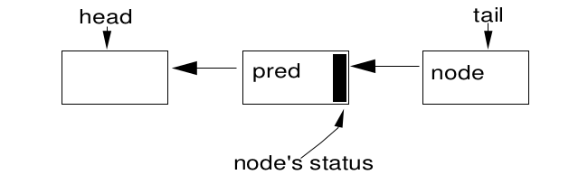
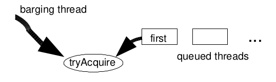
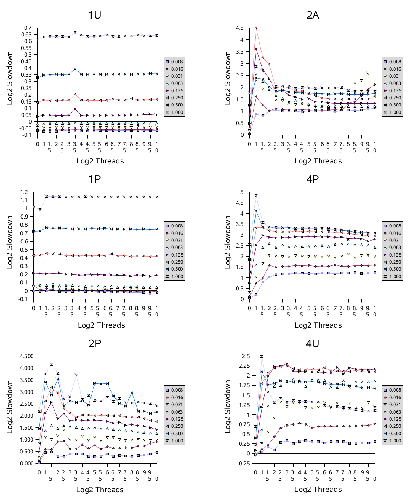
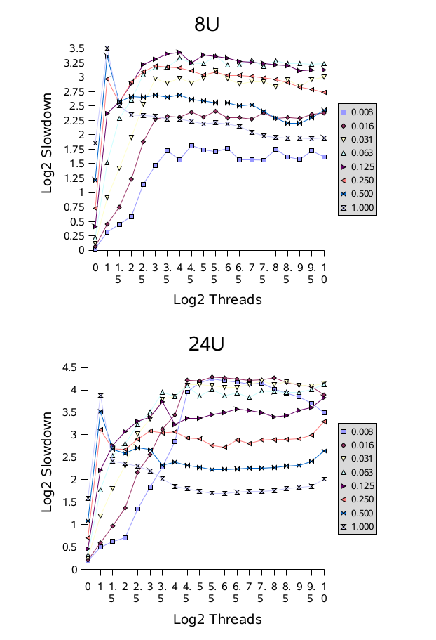

论文翻译-AQS#
备注
原文： http://gee.cs.oswego.edu/dl/papers/aqs.pdf
ABSTRACT 摘要#
Most synchronizers (locks, barriers, etc.) in the J2SE1.5
java.util.concurrent package are constructed using a small
framework based on class AbstractQueuedSynchro-nizer.
This framework provides common mechanics for
atomically managing synchronization state, blocking and
unblocking threads, and queuing. The paper describes the
rationale, design, implementation, usage, and performance of this
framework.
在 J2SE1.5 的 java.util.concurrent 包中，大多数同步器（locks、barriers 等）
都是使用一个基于AbstractQueuedSynchro-nizer 类的小型框架构建的。
这个框架为同步状态的原子化管理、线程的阻塞和解除、队列操作提供了通用机制。
这篇论文阐述了这个框架的原理、设计、实现、使用和性能。
Categories and Subject Descriptors#
D.1.3 [Programming Techniques]: Concurrent Programming – Parallel Programming
General Terms#
Algorithms, Measurement, Performance, Design.
Keywords#
Synchronization, Java
1. INTRODUCTION 介绍#
Java tm release J2SE-1.5 introduces package java.util.concurrent, a collection of medium-level concurrency support classes created via Java Community Process (JCP) Java Specification Request (JSR) 166. Among these components are a set of synchronizers – abstract data type (ADT) classes that maintain an internal synchronization state (for example, representing whether a lock is locked or unlocked), operations to update and inspect that state, and at least one method that will cause a calling thread to block if the state requires it, resuming when some other thread changes the synchronization state to permit it. Examples include various forms of mutual exclusion locks, read-write locks, semaphores, barriers, futures, event indicators, and handoff queues.
Java 1.5 版本引入 java.util.concurrent 包，这里面包含了一些中级的并发支持类，在 JCP JSR 166 中创建。）。在这些组件中是一组同步器——抽象数据结构类（ADT），维护内部的同步状态 （例如，代表一把锁是锁定状态还是解锁状态），更新和检查状态的操作，以及当状态需要同步器时， 特定的方法会导致调用线程阻塞，直到另一个线程更改同步状态，以允许其继续运行。示例来自各形式的 互斥锁，读写锁、信号量、屏障、futures、事件指示器、操作队列。
As is well-known (see e.g., [2]) nearly any synchronizer can be used to implement nearly any other. For example, it is possible to build semaphores from reentrant locks, and vice versa. However, doing so often entails enough complexity, overhead, and inflexibility to be at best a second-rate engineering option. Further, it is conceptually unattractive. If none of these constructs are intrinsically more primitive than the others, developers should not be compelled to arbitrarily choose one of them as a basis for building others. Instead, JSR166 establishes a small framework centered on class AbstractQueuedSynchro- nizer, that provides common mechanics that are used by most of the provided synchronizers in the package, as well as other classes that users may define themselves.
众所周知(见例子, [2]) ，大多数同步器之间可以互相实现。例如，可以使用重入锁实现信号量，反之亦然。然而，
这样做做往往相当复杂，开销过大，不灵活，只能作为次等的工程选择。此外，这在概念上也不吸引人。
如果没有一个本质上更基本的同步器，那么开发人员就不该被迫任选一种同步器，作为构建其他同步器的基础。
所以，JSR166 建立了一个以 AbstractQueuedSynchro-nizer 类为中心的小型框架，该类为并发包中的
大多数同步器提供了一个通用的机制，也可被用户自定义类使用。
The remainder of this paper discusses the requirements for this framework, the main ideas behind its design and implementation, sample usages, and some measurements showing its performance characteristics.
本文的其余部分讨论了这个框架的要求、其设计和实现背后的主要思想、使用示例，以及展示一些性能指标的测量结果。
2.REQUIREMENTS 要求#
2.1 Functionality 功能#
Synchronizers possess two kinds of methods [7]: at least one acquire operation that blocks the calling thread unless/until the synchronization state allows it to proceed, and at least one release operation that changes synchronization state in a way that may allow one or more blocked threads to unblock.
同步器要具备两种方法 [7]：至少一种获取操作，用来阻塞调用线程，除非/直到 同步状态允许线程继续处理；以及至少一种释放操作，用来改变同步状态，从而允许一个或 多个阻塞的线程解除阻塞。
The java.util.concurrent package does not define a single unified
API for synchronizers. Some are defined via common interfaces
(e.g., Lock), but others contain only specialized versions. So,
acquire and release operations take a range of names and forms
across different classes. For example, methods Lock.lock,
Semaphore.acquire, CountDownLatch.await, and
FutureTask.get all map to acquire operations in the
framework. However, the package does maintain consistent
conventions across classes to support a range of common usage
options. When meaningful, each synchronizer supports:
Nonblocking synchronization attempts (for example, `tryLock``) as well as blocking versions.
Optional timeouts, so applications can give up waiting.
Cancellability via interruption, usually separated into one version of acquire that is cancellable, and one that isn’t.
java.util.concurrent 并没有为同步器定义一个统一的API。一些是通过通用接口
定义的（例如 Lock ），但其他只包含特定的版本。因此，获取和释放操作，在不同的类中
采用了不同的名称和形式。例如这些方法 Lock.lock，Semaphore.acquire，
CountDownLatch.await 和 FutureTask.get 都映射为框架中的获取操作。
但是，这个包就在类之间保持了一致的约定，来支持一系列的使用选项。如果有意义，每个同步器都支持：
非阻塞的同步尝试（例如
tryLock）, 以及阻塞的版本可选的超时机制，以便应用程序可以放弃等待。
通过中断实现取消功能，获取操作通常分为一个可取消的版本，以及一个不能取消的版本。
Synchronizers may vary according to whether they manage only exclusive states – those in which only one thread at a time may continue past a possible blocking point – versus possible shared states in which multiple threads can at least sometimes proceed. Regular lock classes of course maintain only exclusive state, but counting semaphores, for example, may be acquired by as many threads as the count permits. To be widely useful, the framework must support both modes of operation.
同步器可能根据他们管理的状态是独占状态还是共享状态而有所不同。独占状态是指 一次只有一个线程可以继续通过可能的阻塞点，而共享状态则允许多个线程至少某些时刻可以同时处理任务。 当然，常规的锁类只维护独占状态，但是，例如信号量，只要许可证数量足够，就可以被读多个线程获取。 为了广泛应用，框架必须支持这两种操作模式。
The java.util.concurrent package also defines interface
Condition, supporting monitor-style await/signal operations
that may be associated with exclusive Lock classes, and whose
implementations are intrinsically intertwined with their
associated Lock classes.
java.util.concurrent 包还定义了Condition接口，支持与独占锁Lock类关联的监视器
风格的 await/signal 操作，这些实现与它们关联的Lock类密切相关。
2.2 Performance Goals 性能目标#
Java built-in locks (accessed using synchronized methods and blocks) have long been a performance concern, and there is a sizable literature on their construction (e.g., [1], [3]). However, the main focus of such work has been on minimizing space overhead (because any Java object can serve as a lock) and on minimizing time overhead when used in mostly-single-threaded contexts on uniprocessors. Neither of these are especially important concerns for synchronizers: Programmers construct synchronizers only when needed, so there is no need to compact space that would otherwise be wasted, and synchronizers are used almost exclusively in multithreaded designs (increasingly often on multiprocessors) under which at least occasional contention is to be expected. So the usual JVM strategy of optimizing locks primarily for the zero-contention case, leaving other cases to less predictable “slow paths” [12] is not the right tactic for typical multithreaded server applications that rely heavily on java.util.concurrent.
Java 内置锁（使用synchronized方法和块）长期以来有性能问题，有大量关于它构造的
文献（例如 [1], [3]）。然而，这类工作的主要焦点在于，在单核心、单线程的上下文种，
最小化空间开销（因为任何Java 对象都可以作为一个锁）以及时间开销。这两点对于同步器
来说都不是特别地重要：程序员只有在需要的时候才会构造同步器，因此没有必要紧凑的使用
空间来避免浪费，并且同步器几乎专门为多线程设计（多处理器越来越常见），在这种情况下
偶尔就会发生竞争。通常 JVM 的锁优化策略主要是为零竞争情况优化的，将其他情况留给不太可
预测的“慢路径” [12]，这对于依赖 java.util.concurrent 的典型的多线程服务器应用
来说并不是一个正确的策略。
Instead, the primary performance goal here is scalability: to predictably maintain efficiency even, or especially, when synchronizers are contended. Ideally, the overhead required to pass a synchronization point should be constant no matter how many threads are trying to do so. Among the main goals is to minimize the total amount of time during which some thread is permitted to pass a synchronization point but has not done so. However, this must be balanced against resource considerations, including total CPU time requirements, memory traffic, and thread scheduling overhead. For example, spinlocks usually provide shorter acquisition times than blocking locks, but usually waste cycles and generate memory contention, so are not often applicable.
相反，这里的主要性能目标是可伸缩性：即在同步器被争用时，能够可预测的保持效率。 理想情况下，无论多少线程正在尝试通过同步点，其所需要的开销应该是恒定的。主要目标之一 是尽量减少某个线程被允许通过同步点，但尚未这样做的总时间量（译注：竞态下， 资源足以分配给当前线程时， 当前线程获取资源的时间）。然而，这些操作必须对资源利用 均衡考量，包括需要 CPU 的总时间，内存流量和线程调度开销。例如，获取自旋锁通常 比获取阻塞锁使用的时间更短，但获取自旋锁通常会浪费 CPU 周期和内存竞争，因此并不普适。
These goals carry across two general styles of use. Most applications should maximize aggregate throughput, tolerating, at best, probabilistic guarantees about lack of starvation. However in applications such as resource control, it is far more important to maintain fairness of access across threads, tolerating poor aggregate throughput. No framework can decide between these conflicting goals on behalf of users; instead different fairness policies must be accommodated.
这些目标贯穿两种基本的使用方式。大多数应用应该最大化总通吐量，最多只能容忍概率上保证不发生饥饿。 然而，在资源控制等应用程序中，更重要的是在线程之间维持公平的资源访问，可以容忍牺牲总通吐量。 没有一个框架可以代表户在这些相互冲突的目标中作出决定；相反，必须提供不同的公平策略来适应不同场景。
No matter how well-crafted they are internally, synchronizers will create performance bottlenecks in some applications. Thus, the framework must make it possible to monitor and inspect basic operations to allow users to discover and alleviate bottlenecks. This minimally (and most usefully) entails providing a way to determine how many threads are blocked。
无论同步器内部设计的多么精良，他们都会成为某些应用的性能瓶颈。因此，框架必须提供监控和 检查内部操作的功能，以便用户能够发现和缓解瓶颈。至少应该（也是最有用的）包括提供一种 方法来确定有多少线程被阻塞。
3. DESIGN AND IMPLEMENTATION 设计和实现#
The basic ideas behind a synchronizer are quite straightforward. An acquire operation proceeds as:
同步器背后的基本思路非常简单。获取操作的过程如下：
while (synchronization state does not allow acquire) {
enqueue current thread if not already queued;
possibly block current thread;
}
dequeue current thread if it was queued;
And a release operation is: 释放操作如下：
update synchronization state;
if (state may permit a blocked thread to acquire)
unblock one or more queued threads;
Support for these operations requires the coordination of three basic components: 支持这些操作需要协调三个基本组件：
Atomically managing synchronization state 原子的管理同步状态
Blocking and unblocking threads 对线程进行阻塞和解除阻塞
Maintaining queues 维护队列
It might be possible to create a framework that allows each of these three pieces to vary independently. However, this would neither be very efficient nor usable. For example, the information kept in queue nodes must mesh with that needed for unblocking, and the signatures of exported methods depend on the nature of synchronization state.
也许可以创建一个框架，允许这三者独立变化。但是，这样性能不高，也无法使用。 例如，队列节点中保留的信息必须和解除阻塞所需要的信息所匹配，并且对外暴露方法的 签名，取决于同步状态的性质。
The central design decision in the synchronizer framework was to choose a concrete implementation of each of these three components, while still permitting a wide range of options in how they are used. This intentionally limits the range of applicability, but provides efficient enough support that there is practically never a reason not to use the framework (and instead build synchronizers from scratch) in those cases where it does apply.
同步框架设计的核心是如何具体实现这三个组件，同时允许它们在使用方式上有很大的灵活性。 这个设计故意限制了适用范围，但是提高了足够高效的支持，因此，在适合的情况下就应该使用 这个框架（而不是从头开始构建同步器）。
3.1 Synchronization State 同步状态#
Class AbstractQueuedSynchronizer maintains synchro-
nization state using only a single (32bit) int, and exports
getState, setState, and compareAndSetState
operations to access and update this state. These methods in turn
rely on java.util.concurrent.atomic support providing JSR133
(Java Memory Model) compliant volatile semantics on reads
and writes, and access to native compare-and-swap or load- linked/store-conditional instructions to implement compare- AndSetState, that atomically sets state to a given new value
only if it holds a given expected value.
AbstractQueuedSynchronizer 类仅使用一个（32 位）int来维护同步状态，
并且通过对外暴露getState, setState, and compareAndSetState方法来
访问和改变这个状态。这些方法依赖于java.util.concurrent.atomic包，这个包
提供了 JSR133（Java 内存模型）兼容的volatile读、写语义，并且通过访问
compare-and-swap 或 load-linked/store-conditional 原生指令，来实现
compare-AndSetState，这个指令只有在状态值持有预期值时，才将状态原子地设置为
给定的新值。
Restricting synchronization state to a 32bit int was a pragmatic
decision. While JSR166 also provides atomic operations on 64bit
long fields, these must still be emulated using internal locks on
enough platforms that the resulting synchronizers would not
perform well. In the future, it seems likely that a second base
class, specialized for use with 64bit state (i.e., with long control
arguments), will be added. However, there is not now a
compelling reason to include it in the package. Currently, 32 bits
suffice for most applications. Only one java.util.concurrent
synchronizer class, CyclicBarrier, would require more bits
to maintain state, so instead uses locks (as do most higher-level
utilities in the package).
将同步状态限制为 32位的int是一个务实的决定。虽然 JSR166 也提供了对 64位long
字段的原子操作，但是，在部分平台上，仍然需要内部锁来模拟这些操作，从而导致生成的同步器
性能不佳。将来，可能会再添加一个基类，专门用来处理 64位状态（即具有long的控制参数）。
然而，目前还没有充分的理由将其包含在该包中。目前，32 位对于大多数应用程序来说已经足够。
java.util.concurrent 中只有CyclicBarrier一个同步器类，需要更多的位来维护状态，
因此它使用了锁（就像这个包中的大多数高级工具一样）。
Concrete classes based on AbstractQueuedSynchronizer
must define methods tryAcquire and tryRelease in terms
of these exported state methods in order to control the acquire
and release operations. The tryAcquire method must return
true if synchronization was acquired, and the tryRelease
method must return true if the new synchronization state may
allow future acquires. These methods accept a single int
argument that can be used to communicate desired state; for
example in a reentrant lock, to re-establish the recursion count
when re-acquiring the lock after returning from a condition wait.
Many synchronizers do not need such an argument, and so just
ignore it.
基于AbstractQueuedSynchronizer的具体类必须根据这些暴露的状态方法，
来定义方法 tryAcquire 和 tryRelease ，从而控制获取和释放操作。
tryAcquire必须在获取同步状态成功后返回true，tryRelease必须在
在将来可能获取新的同步状态时返回true。这些方法接受一个单独的int参数，
这个参数可以和所需的状态进行通信。例如，在可重入锁中，可以在条件等待返回后，
重新获取锁时重新建立递归计数。许多同步器不需要同步这个参数，忽视它即可。
3.2 Blocking 阻塞#
Until JSR166, there was no Java API available to block and
unblock threads for purposes of creating synchronizers that are
not based on built-in monitors. The only candidates were
Thread.suspend and Thread.resume, which are
unusable because they encounter an unsolvable race problem: If
an unblocking thread invokes resume before the blocking
thread has executed suspend, the resume operation will have
no effect.
在 JSR166 以前，除了内置的监视器，没有可用的阻塞和解除阻塞线程的 Java API 来
创建同步器。唯一的选择是使用 Thread.suspend 和 Thread.resume，但是也不能
使用它们，因为会遇到一个无法解决的竞争问题：如果一个解除阻塞的线程先调用了 resume，
阻塞线程后执行suspend ，那么resume操作将没有任何作用。
The java.util.concurrent.locks package includes a LockSup-port
class with methods that address this problem. Method
LockSupport.park blocks the current thread unless or until
a LockSupport.unpark has been issued. (Spurious wakeups
are also permitted.) Calls to unpark are not “counted”, so
multiple unparks before a park only unblock a single park.
Additionally, this applies per-thread, not per-synchronizer. A
thread invoking park on a new synchronizer might return
immediately because of a “leftover” unpark from a previous
usage. However, in the absence of an unpark, its next
invocation will block. While it would be possible to explicitly
clear this state, it is not worth doing so. It is more efficient to
invoke park multiple times when it happens to be necessary.
java.util.concurrent.locks 包含一个名为 LockSup-port 的类，这个
类的方法解决了这个问题。LockSupport.park 方法会阻塞当前线程，直到发出
LockSupport.unpark 指令。（也允许虚假唤醒）对unpark 的调用不会“计数”，
因此在 park 之前多次调用unparks只会解除一个park。此外，这种情况是针对
每个线程，而不是每个同步器。一个线程在一个新的同步器上调用可能会立即返回，因为
之前使用的同步器上有一个“残留”的unpark。然而，如果没有调用unpark，下一次
调用就会阻塞。虽然可以显示的清除这个状态，但没有必要。必要时，多次调用park更高效。
This simple mechanism is similar to those used, at some level, in
the Solaris-9 thread library [11], in WIN32 “consumable events”,
and in the Linux NPTL thread library, and so maps efficiently to
each of these on the most common platforms Java runs on.
(However, the current Sun Hotspot JVM reference
implementation on Solaris and Linux actually uses a pthread
condvar in order to fit into the existing runtime design.) The
park method also supports optional relative and absolute
timeouts, and is integrated with JVM Thread.interrupt
support — interrupting a thread unparks it.
这种简单的机制类似于 Solaris-9 线程库[11]、WIN32 的“可消耗事件”和 Linux 中的
NPTL 线程库，因此这在常见的 Java 运行平台上都可以高效运行。 （然而，当前的 Sun Hotspot JVM
实际上参考 Solaris 和 Linux 使用了一个 pthread condvar[^注1]，以适应当前的运行设计）
park操作还支持设置超时选项，可以是绝对时间和相对时间，并且于 JVM 的Thread.interrupt
集成——中断一个线程会解除其阻塞。
备注
pthread condvar: POSIX 线程库（Pthreads）中的条件变量（condition variable）。
条件变量是用于线程间同步的一种机制，通常与互斥锁一起使用。它允许线程在等待某个条件成立时进入阻塞状态，并在条件满足时唤醒等待的线程。 pthread condvar 提供了以下几个主要操作：
pthread_cond_init: 初始化条件变量。
pthread_cond_signal: 唤醒一个等待在条件变量上的线程。
pthread_cond_broadcast: 唤醒所有等待在条件变量上的线程。
pthread_cond_wait: 等待条件变量，同时释放相关的互斥锁，并在条件变量被信号唤醒时重新获取互斥锁。
pthread_cond_timedwait: 类似于 pthread_cond_wait，但是可以设置超时。
3.3 Queues 队列#
The heart of the framework is maintenance of queues of blocked threads, which are restricted here to FIFO queues. Thus, the framework does not support priority-based synchronization.
这个框架的核心是维护阻塞线程队列，这些队列在这里被限制为 FIFO 队列。因此，这个框架 不支持基于优先级的同步。
These days, there is little controversy that the most appropriate choices for synchronization queues are non-blocking data structures that do not themselves need to be constructed using lower-level locks. And of these, there are two main candidates: variants of Mellor-Crummey and Scott (MCS) locks [9], and variants of Craig, Landin, and Hagersten (CLH) locks [5] [8] [10]. Historically, CLH locks have been used only in spinlocks. However, they appeared more amenable than MCS for use in the synchronizer framework because they are more easily adapted to handle cancellation and timeouts, so were chosen as a basis. The resulting design is far enough removed from the original CLH structure to require explanation.
如今，普遍认为最适合同步队列的选择是非阻塞数据结构，非阻塞数据结构不需要使用较低级别 的锁来构建。在这些选择中，有两个主要的候选者：Mellor-Crummey 和 Scott (MCS) 锁的变体[9]，以及 Craig、Landin 和 Hagersten (CLH) 锁的变体[5] [8] [10]。 从历史上看，CLH 锁仅在自旋锁中被使用。然而，与 MCS 相比，CLH 似乎更适合用于同步器框架， 因为 CLH 更适合处理取消和超时操作，因此选择 CLH 作为同步框架实现的基础。这样得到的 设计与原始的 CLH 结构有很大的差异，因此需要额外解释说明。
A CLH queue is not very queue-like, because its enqueuing and
dequeuing operations are intimately tied to its uses as a lock. It is
a linked queue accessed via two atomically updatable fields,
head and tail, both initially pointing to a dummy node.
CLH 队列并不像传统的队列，因为它的入队和出队操作与它作为锁紧密相关。它是一个链式队列，
可以访问head和tail这两个字段，并且支持原子更新，这两个字段在初始化时指向一个虚拟节点。

A new node, node, is enqueued using an atomic operation:
node是一个新节点，其原子化入队操作：
do { pred = tail;
} while(!tail.compareAndSet(pred, node));
The release status for each node is kept in its predecessor node. So, the “spin” of a spinlock looks like:
每个节点的释放状态都保存在前驱节点中。因此，自旋锁的“自旋”操作如下：
while (pred.status != RELEASED) ; // spin
A dequeue operation after this spin simply entails setting the
head field to the node that just got the lock:
自旋之后的出队后，只需要将head字段设置为刚刚获得锁的节点即可。
head = node;
Among the advantages of CLH locks are that enqueuing and
dequeuing are fast, lock-free, and obstruction free (even under
contention, one thread will always win an insertion race so will
make progress); that detecting whether any threads are waiting is
also fast (just check if head is the same as tail); and that
release status is decentralized, avoiding some memory
contention.
CLH 自旋锁的优点包括：入队和出队操作快、无锁且无阻塞（即使在竞争情况下，
总是会有一个线程会赢得插入的机会，因此整个任务一直可以取得进展）；检测是否有其他
线程正在等待也很快（只需要检查head与tail是否相同）；释放状态是分散的，
避免了一些内存竞争。
In the original versions of CLH locks, there were not even links
connecting nodes. In a spinlock, the pred variable can be held
as a local. However, Scott and Scherer[10] showed that by
explicitly maintaining predecessor fields within nodes, CLH
locks can deal with timeouts and other forms of cancellation: If a
node’s predecessor cancels, the node can slide up to use the
previous node’s status field.
在最初的 CLH 锁中，节点之间甚至没有链接。在自旋锁中，pred变量可以作为局部变量存在。
然而， Scott 和 Scherer[10] 表明，通过在节点之间明确维护前驱字段，CLH 锁可以处理
超时和其他形式的取消操作：如果一个节点的前驱节点取消了，这个节点就可以滑动上去使用前一个节点的状态字段。
The main additional modification needed to use CLH queues for
blocking synchronizers is to provide an efficient way for one
node to locate its successor. In spinlocks, a node need only
change its status, which will be noticed on next spin by its
successor, so links are unnecessary. But in a blocking
synchronizer, a node needs to explicitly wake up (unpark) its
successor.
将 CLH 队列用于阻塞同步器的主要修改就是，为一个节点提供一个高效定位后继节点的方式。
在自旋锁中，一个节点只需要修改自己的状态，其后继节点会在下一次自旋时注意到这个状态变化。
所以节点之间的链接不是必须的。但是在阻塞同步器中，一个节点需要明确的唤醒（unpark）它的后继节点。
An AbstractQueuedSynchronizer queue node contains a
next link to its successor. But because there are no applicable
techniques for lock-free atomic insertion of double-linked list
nodes using compareAndSet, this link is not atomically set as
part of insertion; it is simply assigned:
AbstractQueuedSynchronizer 队列节点包含一个指向其后继节点的 next 链接。
但是，因为没有适用于使用 compareAndSet 进行双向链表节点的无锁原子插入的技术，
所以这个链接在插入过程中不会被原子地设置；它只是简单地赋值：
pred.next = node;
after the insertion. This is reflected in all usages. The next link
is treated only as an optimized path. If a node’s successor does
not appear to exist (or appears to be cancelled) via its next field,
it is always possible to start at the tail of the list and traverse
backwards using the pred field to accurately check if there
really is one.
在插入操作之后就会反映在所有用法中。next 链接仅被视为一条优化路径。如果通过一个节点的的 next
字段来看，这个节点的后继节点已经不存在（或者看起来已经被取消），始终可以从列表的尾部开始，
并使用 pred 字段往回遍历，以准确地检查是否真的存在一个后继节点。
A second set of modifications is to use the status field kept in
each node for purposes of controlling blocking, not spinning. In
the synchronizer framework, a queued thread can only return
from an acquire operation if it passes the tryAcquire method
defined in a concrete subclass; a single “released” bit does not
suffice. But control is still needed to ensure that an active thread
is only allowed to invoke tryAcquire when it is at the head of
the queue; in which case it may fail to acquire, and (re)block.
This does not require a per-node status flag because permission
can be determined by checking that the current node’s
predecessor is the head. And unlike the case of spinlocks, there
is not enough memory contention reading head to warrant
replication. However, cancellation status must still be present in
the status field.
第二组修改是利用每个节点中保存的状态字段来控制阻塞，而不是自旋。在同步器框架中，
在排队的线程，只有在调用具体子类中定义的 tryAcquire 方法通过后，才能从获取操作中返回；
单独的“已释放”位是不够的。仍然需要进行控制，以确保只有在队列的头部的活动线程才可以
调用 tryAcquire；在这种情况下，它也可能无法获取，并且（重新）阻塞。这不需要查看
每个节点的状态标志，因为可以通过检查当前节点的前驱是否是head来确定权限。
与自旋锁的情况不同，读取头部进行复制时，不会存在的内存争。但是，状态字段中
必须存在取消状态。
The queue node status field is also used to avoid needless calls to
park and unpark. While these methods are relatively fast as
blocking primitives go, they encounter avoidable overhead in the
boundary crossing between Java and the JVM runtime and/or OS.
Before invoking park, a thread sets a “signal me” bit, and then
rechecks synchronization and node status once more before
invoking park. A releasing thread clears status. This saves
threads from needlessly attempting to block often enough to be
worthwhile, especially for lock classes in which lost time waiting
for the next eligible thread to acquire a lock accentuates other
contention effects. This also avoids requiring a releasing thread
to determine its successor unless the successor has set the signal
bit, which in turn eliminates those cases where it must traverse
multiple nodes to cope with an apparently null next field unless
signalling occurs in conjunction with cancellation.
队列节点的状态字段还用于避免不必要地调用 park 和 unpark 方法。虽然这些方法在
阻塞原语中相对较快，但这些是在 Java 、JVM 运行时、操作系统之间的边界交叉中可以
避免的开销。在调用park之前，线程会设置一个“signal me”的 bit 位，然后再检查
同步和节点状态。释放线程会清除状态。尤其是对某些锁类来说，这样做通常是值得的，
因为可以使线程避免不必要的阻塞，避免浪费时间去等待下一个符合条件的线程去获取锁，
这样会加重其他竞争效应。这也避免了释放线程需要确定其后继节点，除非后继节点设置了信号位，
除开取消操作和发信号同时发生之外，必须遍历多个节点，以应对next字段明显为空的情况也被避免了。
Perhaps the main difference between the variant of CLH locks used in the synchronizer framework and those employed in other languages is that garbage collection is relied on for managing storage reclamation of nodes, which avoids complexity and overhead. However, reliance on GC does still entail nulling of link fields when they are sure to never to be needed. This can normally be done when dequeuing. Otherwise, unused nodes would still be reachable, causing them to be uncollectable. Some further minor tunings, including lazy initialization of the initial dummy node required by CLH queues upon first contention, are described in the source code documentation in the J2SE1.5 release.
在同步器框架中使用 CLH 锁的变体和在其他语言中使用的主要区别在于，后者依赖于垃圾收集 来管理节点的存储回收，这避免了复杂性和开销。然而，依赖 GC 就需要在确定不再需要链接 字段时将其置空。这一般可以在出队时完成。然而，未使用的节点将依然可达，导致其不能被回收。 在 J2SE1.5 发布的源代码文档中，对其进一步的微调进行了描述，包括在首次竞争时， 对 CLH 队列所需的初始虚拟节点进行延迟初始化。
Omitting such details, the general form of the resulting implementation of the basic acquire operation (exclusive, noninterruptible, untimed case only) is:
忽略这些细节，最终得到的基本获取操作的一般形式（独占、无中断、无超时）如下：
if (!tryAcquire(arg)) {
node = create and enqueue new node;
pred = node's effective predecessor;
while (pred is not head node || !tryAcquire(arg)) {
if (pred's signal bit is set)
park();
else
compareAndSet pred's signal bit to true;
pred = node's effective predecessor;
}
head = node;
}
And the release operation is: 释放的操作如下：
if (tryRelease(arg) && head node's signal bit is set) {
compareAndSet head's signal bit to false;
unpark head's successor, if one exists
}
The number of iterations of the main acquire loop depends, of
course, on the nature of tryAcquire. Otherwise, in the
absence of cancellation, each component of acquire and release is
a constant-time O(1) operation, amortized across threads,
disregarding any OS thread scheduling occuring within park.
获取循环的迭代次数取决于 tryAcquire 的性质。否则，在没有取消的情况下，
忽略发生在 park 内部的所有操作系统线程调度，分摊到各个线程上，获取和释放操作
都是常量时间复杂度为 O(1) 的操作。
Cancellation support mainly entails checking for interrupt or
timeout upon each return from park inside the acquire loop. A
cancelled thread due to timeout or interrupt sets its node status
and unparks its successor so it may reset links. With cancellation,
determining predecessors and successors and resetting status may
include O(n) traversals (where n is the length of the queue).
Because a thread never again blocks for a cancelled operation,
links and status fields tend to restabilize quickly.
支持取消，主要涉及在获取循环中，每次从 park 返回时去检查中断或超时。
由于超时或中断而取消的线程，会设置其节点状态，并唤醒其后继节点，以便其可以重置链接。
在取消的情况下，确定前驱和后继节点，以及重置状态可能包括 O(n) 的遍历（其中 n 是队列的长度）。
因为线程不会因为取消操作再次阻塞，链接和状态字段往往会迅速恢复稳定。
3.4 Condition Queues 条件队列#
The synchronizer framework provides a ConditionObject
class for use by synchronizers that maintain exclusive
synchronization and conform to the Lock interface. Any number
of condition objects may be attached to a lock object, providing
classic monitor-style await, signal, and signalAll
operations, including those with timeouts, along with some
inspection and monitoring methods.
同步器框架提供了一个 ConditionObject 类，供那些维护独占同步，并且符合
Lock 接口的同步器使用。可以将任意数量的条件对象附加到锁对象上，提供经典
的监视器风格的 await、signal 和 signalAll 操作，包括超时操作，
以及一些检查和监控方法。
The ConditionObject class enables conditions to be
efficiently integrated with other synchronization operations,
again by fixing some design decisions. This class supports only
Java-style monitor access rules in which condition operations are
legal only when the lock owning the condition is held by the
current thread (See [4] for discussion of alternatives). Thus, a
ConditionObject attached to a ReentrantLock acts in
the same way as do built-in monitors (via Object.wait etc),
differing only in method names, extra functionality, and the fact
that users can declare multiple conditions per lock.
再修改一些设计方案，ConditionObject 类就可以将条件与其他同步操作高效地集成。
该类仅支持 Java 风格的监视器访问规则，其中条件操作仅在当前线程持有条件的锁时才合法
（请参阅 [4]，了解其他选择的讨论）。因此，附加到 ReentrantLock 的
ConditionObject 的行为与内置的监视器（通过 Object.wait 等）相同，与内置的监视器
不同的只是方法名称、额外功能，以及用户可以为每个锁声明多个条件。
A ConditionObject uses the same internal queue nodes as
synchronizers, but maintains them on a separate condition queue.
The signal operation is implemented as a queue transfer from the
condition queue to the lock queue, without necessarily waking up
the signalled thread before it has re-acquired its lock.
ConditionObject 使用与同步器相同的内部队列节点，但是将它们被维护在单独的条件队列中。
singal操作的实现是将节点从条件队列转移到锁队列，无需在信号线程重新获取它的锁之前唤醒它。
The basic await operation is: await 操作的基本如下：
create and add new node to condition queue;
release lock;
block until node is on lock queue;
re-acquire lock;
And the signal operation is: signal 操作如下
transfer the first node from condition queue to lock queue;
Because these operations are performed only when the lock is
held, they can use sequential linked queue operations (using a
nextWaiter field in nodes) to maintain the condition queue.
The transfer operation simply unlinks the first node from the
condition queue, and then uses CLH insertion to attach it to the
lock queue.
因为这些操作只在持有锁时执行，它们可以使用顺序链接队列操作（使用节点中的
nextWaiter 字段）来维护条件队列。转移操作就是简单地从条件队列中删除头节点，
然后使用 CLH 将其连接到插入到锁队列。
The main complication in implementing these operations is
dealing with cancellation of condition waits due to timeouts or
Thread.interrupt. A cancellation and signal occuring at
approximately the same time encounter a race whose outcome
conforms to the specifications for built-in monitors. As revised in
JSR133, these require that if an interrupt occurs before a signal,
then the await method must, after re-acquiring the lock, throw
InterruptedException. But if it is interrupted after a
signal, then the method must return without throwing an
exception, but with its thread interrupt status set.
实现这些操作时主要的复杂性，在于因超时或 Thread.interrupt而导致条件等待的取消。
在几乎同时发生取消和通知信号的情况下，会遇到竞争，其结果符合内置监视器的规范。
在 JSR133 的修订中，这些规范要求，如果在通知信号之前发生中断，则 await 方法
在重新获取锁之后必须抛出 InterruptedException。但如果在通知信号之后中断，
则该方法必须在不抛出异常的情况下返回，并将其线程中断状态设置为已中断。
To maintain proper ordering, a bit in the queue node status
records whether the node has been (or is in the process of being)
transferred. Both the signalling code and the cancelling code try
to compareAndSet this status. If a signal operation loses this race,
it instead transfers the next node on the queue, if one exists. If a
cancellation loses, it must abort the transfer, and then await lock
re-acquisition. This latter case introduces a potentially
unbounded spin. A cancelled wait cannot commence lock re-
acquisition until the node has been successfully inserted on the
lock queue, so must spin waiting for the CLH queue insertion
compareAndSet being performed by the signalling thread to
succeed. The need to spin here is rare, and employs a
Thread.yield to provide a scheduling hint that some other
thread, ideally the one doing the signal, should instead run. While
it would be possible to implement here a helping strategy for the
cancellation to insert the node, the case is much too rare to justify
the added overhead that this would entail. In all other cases, the
basic mechanics here and elsewhere use no spins or yields, which
maintains reasonable performance on uniprocessors.
为了保持正确的顺序，队列节点状态中的一个位记录了节点是否已经（或正在）被转移。
通知信号代码和取消代码都尝试比较并设置这个状态。如果通知信号操作竞争失败，
它会转移队列中的下一个节点（如果存在的话）。如果取消操作竞争失败，它必须停止转移，
然后等待到重新获取锁。后一种情况可能会导致永久自旋。取消等待无法重新开始获取锁，
直到节点成功插入到锁队列中，因此在由通知信号线程执行的 CLH 队列插入比较并设置操作成功前，
必须自旋等待。在这里需要自旋的情况很少见，并且使用了 Thread.yield 来提供一个调度提示，
表示其他线程应该运行，理想情况下是执行通知信号的线程运行。虽然在这里可以实现一个辅助策略
来进行取消操作，但是这种情况发生的频率太低，无法证明为此增加的开销是合理的。
在其他情况下，这里和其他地方的基本机制都不使用自旋或让出，如此可以保持在单处理器上的性能。
4. USAGE 使用#
Class AbstractQueuedSynchronizer ties together the
above functionality and serves as a “template method pattern” [6]
base class for synchronizers. Subclasses define only the methods
that implement the state inspections and updates that control
acquire and release. However, subclasses of
AbstractQueuedSynchronizer are not themselves usable as
synchronizer ADTs, because the class necessarily exports the
methods needed to internally control acquire and release policies,
which should not be made visible to users of these classes. All
java.util.concurrent synchronizer classes declare a private inner
AbstractQueuedSynchronizer subclass and delegate all
synchronization methods to it. This also allows public methods to
be given names appropriate to the synchronizer.
类AbstractQueuedSynchronizer将上述功能联系在一起，并作为同步器的“模板模式”[6]的基类。
子类只需要实现检查和更新状态的方法，从而控制accquire和release。但是，
AbstractQueuedSynchronizer 的子类本身不能用作同步器的抽象数据结构，因为这些子类
必然暴露了内部控制accuire和release的方法，而这些方法是不该对这些类的用户类可见的。
所有的 java.util.concurrent 中的同步器类，都声明了一个私有内部 AbstractQueuedSynchronizer
子类，并将所有同步方法委托给它。这也让同步器可以给公共方法进行合适的命名。
For example, here is a minimal Mutex class, that uses
synchronization state zero to mean unlocked, and one to mean
locked. This class does not need the value arguments supported
for synchronization methods, so uses zero, and otherwise ignores
them.
例如，这是一个最小的Mutex类，它使用同步状态 0 表示未锁定，1 表示已锁定。
该类不需要关心同步方法的参数值，因此使用零，并忽略其他值。
class Mutex {
class Sync extends AbstractQueuedSynchronizer {
public boolean tryAcquire(int ignore) {
return compareAndSetState(0, 1);
}
public boolean tryRelease(int ignore) {
setState(0);
return true;
}
}
private final Sync sync = new Sync();
public void lock() { sync.acquire(0); }
public void unlock() { sync.release(0); }
}
A fuller version of this example, along with other usage guidance
may be found in the J2SE documentation. Many variants are of
course possible. For example, tryAcquire could employ “test-
and-test-and-set” by checking the state value before trying to
change it.
J2SE 文档中可以找到这个示例的更完整版本，以及其他用法指导。当然也可能找到例子的
一些变体。比如，tryAcquire 可以使用 “test-and-test-and-set” ，即在尝试
改变状态的值之前，先检查状态的值，
It may be surprising that a construct as performance-sensitive as a mutual exclusion lock is intended to be defined using a combination of delegation and virtual methods. However, these are the sorts of OO design constructions that modern dynamic compilers have long focussed on. They tend to be good at optimizing away this overhead, at least in code in which synchronizers are invoked frequently.
一个像互斥锁这样性能敏感的结构，使用委托和虚拟方法的组合来定义可能会令人惊讶。 然而，现代动态编译器长期专注于面向对象设计，起码在调用频繁的同步器代码中， 它们很擅长优化掉这种开销。
Class AbstractQueuedSynchronizer also supplies a
number of methods that assist synchronizer classes in policy
control. For example, it includes timeout and interruptible
versions of the basic acquire method. And while discussion so far
has focussed on exclusive-mode synchronizers such as locks, the
AbstractQueuedSynchronizer class also contains a
parallel set of methods (such as acquireShared) that differ in
that the tryAcquireShared and tryReleaseShared
methods can inform the framework (via their return values) that
further acquires may be possible, ultimately causing it to wake up
multiple threads by cascading signals.
AbstractQueuedSynchronizer 类还提供了许多方法，以帮助同步器类进行策略控制。
例如，它在基本的accquire方法上包括超时和可中断的版本。虽然到目前为止的讨论，
集中在像锁这样的独占模式同步器上，但AbstractQueuedSynchronizer类还包含一组
平行的方法（例如 acquireShared），这些方法与独占访问不同，tryAcquireShared和
tryReleaseShared方法可以通过它们的返回值，通知框架可能存在进一步的获取，
最终通过级联信号唤醒多个线程。
Although it is not usually sensible to serialize (persistently store
or transmit) a synchronizer, these classes are often used in turn to
construct other classes, such as thread-safe collections, that are
commonly serialized. The AbstractQueuedSynchronizer
and ConditionObject classes provide methods to serialize
synchronization state, but not the underlying blocked threads or
other intrinsically transient bookkeeping. Even so, most
synchronizer classes merely reset synchronization state to initial
values on deserialization, in keeping with the implicit policy of
built-in locks of always deserializing to an unlocked state. This
amounts to a no-op, but must still be explicitly supported to
enable deserialization of final fields.
虽然对同步器进行序列化（持久存储或传输）通常没有意义，但这些类经常被用于构造其他类，
例如线程安全的集合，这些线程安全的集合通常支持被序列化。AbstractQueuedSynchronizer
和 ConditionObject 类提供了序列化同步状态的方法，但不包括底层阻塞的线程或
其他内部临时数据。即使如此，大多数同步器类仅在反序列化时，将同步状态重置为初始值，
以保持内置锁的隐式策略，始终反序列化为未锁定状态。这相当于一个no-op操作，
但仍必须明确支持，以便启用final字段的反序列化。
4.1 Controlling Fairness 控制公平#
Even though they are based on FIFO queues, synchronizers are
not necessarily fair. Notice that in the basic acquire algorithm
(Section 3.3), tryAcquire checks are performed before
queuing. Thus a newly acquiring thread can “steal” access that is
“intended” for the first thread at the head of the queue.
尽管基于FIFO队列，但同步器并不一定公平。请注意，在基础的acquire算法（第3.3节）中，
在排队之前执行tryAcquire检查。因此，新获取的线程可以“窃取”原本“预定”给队列头部的
第一个线程的访问权限。
This barging FIFO strategy generally provides higher aggregate
throughput than other techniques. It reduces the time during
which a contended lock is available but no thread has it because
the intended next thread is in the process of unblocking. At the
same time, it avoids excessive, unproductive contention by only
allowing one (the first) queued thread to wake up and try to
acquire upon any release. Developers creating synchronizers
may further accentuate barging effects in cases where
synchronizers are expected to be held only briefly by defining
tryAcquire to itself retry a few times before passing back
control.
这种 抢占式 的 FIFO 策略通常比其他技术提供更高的全局吞吐量。它减少了争用锁可用，
但还没有线程占有的时间，因为预定的下一个线程正在解除阻塞中。同时，避免了过度的无效争用，
它只允许一个（第一个）排队的线程唤醒，然后在锁释放后就尝试获取。只想让在同步器短暂持有锁时，
创建同步器的开发人员可以在自定义的 tryAcquire 返回主控流程之前多重试几次，
来进一步增强这种 抢占式 的效果。
Barging FIFO synchronizers have only probablistic fairness properties. An unparked thread at the head of the lock queue has
 an unbiased chance of winning a race with any incoming barging thread, reblocking and retrying if it loses. However, if incoming threads arrive faster than it takes an unparked thread to unblock, the first thread in the queue will only rarely win the race, so will almost always reblock, and its successors will remain blocked. With briefly-held synchronizers, it is common for multiple bargings and releases to occur on multiprocessors during the time the first thread takes to unblock. As seen below, the net effect is to maintain high rates of progress of one or more threads while still at least probabilistically avoiding starvation.
抢占式 式的 FIFO 同步器仅具有概率上的公平性属性。锁队头的 unparked 线程
与任何进入的抢占线程竞争时，有着相同的胜出机会，如果竞争失败就重新阻塞并重试。
然而，如果抢进的线程抵达的速度快于unparked线程解除阻塞所需的时间，队列中的第一个线程
很难能赢得竞争，因此几乎总是会重新阻塞，其后继线程也会保持阻塞状态。对于持有时间很短的
同步器来说，在第一个线程解除阻塞所需的时间内，多处理器上通常会发生多次抢占和释放。
如下所示，其总体效果来看，至少在概率上避免饥饿的同时，保持一个或多个线程的高速率进展。
When greater fairness is required, it is a relatively simple matter
to arrange it. Programmers requiring strict fairness can define
tryAcquire to fail (return false) if the current thread is not at
the head of the queue, checking for this using method
getFirstQueuedThread, one of a handful of supplied
inspection methods.
当需要更大的公平性时，安排这样的公平性就过于简单了。程序员需要严格的公平性，
当前线程不在队列头部时，tryAcquire 就应该失败（返回false），可以使用方法
getFirstQueuedThread 检查这一点，这是提供的几个检查方法之一。
A faster, less strict variant is to also allow tryAcquire to
succeed if the the queue is (momentarily) empty. In this case,
multiple threads encountering an empty queue may race to be the
first to acquire, normally without enqueuing at least one of them.
This strategy is adopted in all java.util.concurrent synchronizers
supporting a “fair” mode.
一个更快但不那么严格的变体是，如果队列（暂时）为空，也允许 tryAcquire 成功。
在这种情况下，多个线程遇到空队列时，就可能会竞争获取锁，一般至少有一个线程不需要排队。
这种策略被所有支持 “fair” 模式的 java.util.concurrent 同步器采用。
While they tend to be useful in practice, fairness settings have no guarantees, because the Java Language Specification does not provide scheduling guarantees. For example, even with a strictly fair synchronizer, a JVM could decide to run a set of threads purely sequentially if they never otherwise need to block waiting for each other. In practice, on a uniprocessor, such threads are likely to each run for a time quantum before being pre-emptively context-switched. If such a thread is holding an exclusive lock, it will soon be momentarily switched back, only to release the lock and block now that it is known that another thread needs the lock, thus further increasing the periods during which a synchronizer is available but not acquired. Synchronizer fairness settings tend to have even greater impact on multiprocessors, which generate more interleavings, and hence more opportunities for one thread to discover that a lock is needed by another thread.
虽然它们在实践中往往很有用，但由于 Java 语言规范没有提供调度保证，因此同步器的 公平设置没有保证。例如，即使使用严格公平的同步器，如果一组线程不会阻塞等待彼此, JVM 也可以决定完全顺序地运行一组线程。在单处理器上，这些线程很可能先运行一个时间片， 再被抢占，进行上下文切换。如果这样的线程持有独占锁，它很快就会被瞬间切换回来， 只是为了释放锁并阻塞，因为现在已知另一个线程需要锁，从而进一步增加同步器可用 但未被获取的时间段。同步器公平设置对多处理器的影响更大，因为它们会产生更多的交错， 因此更容易让一个线程发现另一个线程需要锁
Even though they may perform poorly under high contention when protecting briefly-held code bodies, fair locks work well, for example, when they protect relatively long code bodies and/or with relatively long inter-lock intervals, in which case barging provides little performance advantage and but greater risk of indefinite postponement. The synchronizer framework leaves such engineering decisions to its users.
即使在高竞争条件下，保护短暂持有的代码块时表现不佳，公平锁在其他情况下还是工作得很好， 例如，当它们用来保护相对较长的代码块和/或具有相对较长的锁间隔时间时，在这种情况下， 插队提供的性能优势很小，但却有更大的无限期推迟风险。同步器框架将此类工程决策留给其用户。
4.2 Synchronizers 同步器#
Here are sketches of how java.util.concurrent synchronizer classes are defined using this framework:
这是使用这个框架定义的 java.util.concurrent 同步器类的概述：
The ReentrantLock class uses synchronization state to hold
the (recursive) lock count. When a lock is acquired, it also
records the identity of the current thread to check recursions and
detect illegal state exceptions when the wrong thread tries to
unlock. The class also uses the provided ConditionObject,
and exports other monitoring and inspection methods. The class
supports an optional “fair” mode by internally declaring two
different AbstractQueuedSynchronizer subclasses (the
fair one disabling barging) and setting each ReentrantLock
instance to use the appropriate one upon construction.
ReentrantLock 类使用同步状态来保存（递归的）锁计数。当锁被获取时，
它还会记录当前线程的身份，以检查递归和检测错误线程尝试解锁时的非法状态异常。
该类还使用提供的 ConditionObject，并暴露其他监视和检查方法。该类支持一个
可选的“公平”模式，通过内部声明两个不同的 AbstractQueuedSynchronizer 子类
（公平的那个子类禁止插队），并在构造时设置每个 ReentrantLock 实例使用适当的一个。
The ReentrantReadWriteLock class uses 16 bits of the
synchronization state to hold the write lock count, and the
remaining 16 bits to hold the read lock count. The WriteLock
is otherwise structured in the same way as ReentrantLock.
The ReadLock uses the acquireShared methods to enable
multiple readers.
ReentrantReadWriteLock 类使用 16 位的同步状态，来保存写锁计数，
剩余的16位来保存读锁计数。WriteLock 在结构上与 ReentrantLock相同。
ReadLock 使用 acquireShared 方法来允许多个读取器。
The Semaphore class (a counting semaphore) uses the
synchronization state to hold the current count. It defines
acquireShared to decrement the count or block if
nonpositive, and tryRelease to increment the count, possibly
unblocking threads if it is now positive.
Semaphore 类（一个计数信号量）使用同步状态来保存当前计数。它定义了
acquireShared 来减少计数，或者在非正数时阻塞，以及 tryRelease 来增加计数，
可能在现在为正数时解除线程的阻塞。
The CountDownLatch class uses the synchronization state to
represent the count. All acquires pass when it reaches zero.
The FutureTask class uses the synchronization state to
represent the run-state of a future (initial, running, cancelled,
done). Setting or cancelling a future invokes release,
unblocking threads waiting for its computed value via acquire.
The SynchronousQueue class (a CSP-style handoff) uses
internal wait-nodes that match up producers and consumers. It
uses the synchronization state to allow a producer to proceed
when a consumer takes the item, and vice-versa.
CountDownLatch 类使用同步状态来表示计数。所有的获取操作在它达到零时通过。
FutureTask 类使用同步状态来表示一个 future 的运行状态（初始、运行中、取消、完成）。
调用 release 会设置或取消一个 future ，通过 acquire 解除其计算线程的阻塞。
SynchronousQueue 类（一种CSP风格的传递方式）使用内部等待节点，来匹配生产者和消费者。
它使用同步状态，来允许生产者在消费者取走物品时继续进行，反之亦然。
Users of the java.util.concurrent package may of course define
their own synchronizers for custom applications. For example,
among those that were considered but not adopted in the package
are classes providing the semantics of various flavors of WIN32
events, binary latches, centrally managed locks, and tree-based
barriers.
java.util.concurrent 包的用户当然可以为自定义应用程序定义他们自己的同步器。
例如，在包中考虑但未采纳的类，包括提供 WIN32 事件、二进制门闩、集中管理锁和
基于树的屏障等各种语义的类。
5. PERFORMANCE 性能#
While the synchronizer framework supports many other styles of synchronization in addition to mutual exclusion locks, lock performance is simplest to measure and compare. Even so, there are many different approaches to measurement. The experiments here are designed to reveal overhead and throughput.
同步器框架除了支持互斥锁之外，还支持许多其他类型的同步方式，但锁性能是 最简单的衡量和比较对象。即便如此，衡量的方法也有很多种。这里的实验旨在 揭示开销和吞吐量。
In each test, each thread repeatedly updates a pseudo-random
number computed using function nextRandom(int seed):
在每次测试中，每个线程重复更新一个使用函数 nextRandom(int seed) 计算出的
伪随机数：
int t = (seed % 127773) * 16807 - (seed / 127773) * 2836;
return (t > 0)? t : t + 0x7fffffff;
On each iteration a thread updates, with probability S, a shared generator under a mutual exclusion lock, else it updates its own local generator, without a lock. This results in short-duration locked regions, minimizing extraneous effects when threads are preempted while holding locks. The randomness of the function serves two purposes: it is used in deciding whether to lock or not (it is a good enough generator for current purposes), and also makes code within loops impossible to trivially optimize away.
在每次迭代中，线程有S的概率使用互斥锁，更新共享生成器并，否则它不使用锁， 更新自己的本地生成器。这产生了短暂的锁定区域，当线程持有锁时，也可以让被抢占的 外部影响最小化。该函数的随机性有两个目的：它用于决定是否加锁（它对当前目的来说 是足够好的生成器），同时也使得循环内的代码无法被轻易优化掉。
Four kinds of locks were compared: Builtin, using synchronized
blocks; Mutex, using a simple Mutex class like that illustrated in
section 4; Reentrant, using ReentrantLock; and Fair, using
ReentrantLock set in its “fair” mode. All tests used build 46
(approximately the same as beta2) of the Sun J2SE1.5 JDK in
“server” mode. Test programs performed 20 uncontended runs
before collecting measurements, to eliminate warm-up effects.
Tests ran for ten million iterations per thread, except Fair mode
tests were run only one million iterations.
比较了四种锁：内置锁，使用 synchronized 块；互斥锁，使用一个简单的 Mutex类，
就像第 4 节中所示的那样；可重入锁，使用 ReentrantLock；公平锁，使用设置为“公平”模式
的ReentrantLock。所有测试都使用了 Sun J2SE1.5 JDK 的 build 46（大约与 beta2 相同）
，并在“服务器”模式下进行。测试程序在收集测量数据前，无竞争的运行了 20 次，以消除预热效应。
除了公平模式的测试只运行了一百万次迭代，其他测试每个线程都运行了一千万次迭代。
Tests were performed on four x86-based machines and four UltraSparc-based machines. All x86 machines were running Linux using a RedHat NPTL-based 2.4 kernel and libraries. All UltraSparc machines were running Solaris-9. All systems were at most lightly loaded while testing. The nature of the tests did not demand that they be otherwise completely idle. The “4P” name reflects the fact a dual hyperthreaded (HT) Xeon acts more like a 4-way than a 2-way machine. No attempt was made to normalize across the differences here. As seen below, the relative costs of synchronization do not bear a simple relationship to numbers of processors, their types, or speeds.
测试在四台基于 x86 的机器和四台基于 UltraSparc 的机器上进行。所有x86机器都运行着 Linux， 使用基于 RedHat NPTL 的 2.4 内核和库。所有 UltraSparc 机器都运行着 Solaris-9。 所有系统在测试时都最多是轻载状态。测试的性质不要求它们完全空闲。”4P”名称反映了这样一个事实： 一个双超线程（HT）的 Xeon 表现得更像是 4 路机器而不是 2 路机器。这里没有试图标准化这些差异。 如下所示，同步的相对成本与处理器的数量、类型或速度没有简单的关系。
Table 1 Test Platforms
Name |
Processors |
Type |
Speed (Mhz) |
|---|---|---|---|
1P |
1 |
Pentium3 |
900 |
2P |
2 |
Pentium3 |
1400 |
2A |
2 |
Athlon |
2000 |
4P |
2 HT |
Pentium4/Xeon |
2400 |
1U |
1 |
UltraSparc2 |
650 |
4U |
4 |
UltraSparc2 |
450 |
8U |
8 |
UltraSparc3 |
750 |
24U |
24 |
UltraSparc3 |
750 |
5.1 Overhead 负载#
Uncontended overhead was measured by running only one thread, subtracting the time per iteration taken with a version setting S=0 (zero probability of accessing shared random) from a run with S=1. Table 2 displays these estimates of the per-lock overhead of synchronized code over unsynchronized code, in nanoseconds. The Mutex class comes closest to testing the basic cost of the framework. The additional overhead for Reentrant locks indicates the cost of recording the current owner thread and of error-checking, and for Fair locks the additional cost of first checking whether the queue is empty.
无竞争情况下的开销只通过运行一个线程来测量，在每次迭代中，从 S=1 的运行时间中减去
S=0（访问共享随机数的概率为零）的版本所花费的时间。表 2 显示了同步代码相对于
非同步代码的每次锁开销估计值，以纳秒为单位。Mutex 类最接近于测试框架的基本成本。
可重入锁的额外开销表明了记录当前拥有线程和错误检查的成本，对于公平锁，还有首先检查
队列是否为空的额外成本。
Table 2 also shows the cost of tryAcquire versus the “fast
path” of a built-in lock. Differences here mostly reflect the costs
of using different atomic instructions and memory barriers across
locks and machines. On multiprocessors, these instructions tend
to completely overwhelm all others. The main differences
between Builtin and synchronizer classes are apparently due to
Hotspot locks using a compareAndSet`` for both locking and unlocking, while these synchronizers use a compareAndSet` for
acquire and a volatile write (i.e., with a memory barrier on
multiprocessors, and reordering constraints on all processors) on
release. The absolute and relative costs of each vary across
machines.
表 2 还显示了tryAcquire与内置锁的“快速获取方式”成本。这里的差异主要反映了不同的
原子指令，在各种锁和各种机器上的的内存屏障成本。在多处理器上，这些指令和屏障的执行成本
往往比其他操作更高，占据了整体性能的主要部分。内置锁和同步器类之间的主要差异在于，
Hotspot 锁在锁定和解锁时都使用 compareAndSet，而这些同步器在获取时使用 compareAndSet，
在释放时使用 volatile 写入（即，在多处理器上使用内存屏障，以及对所有处理器使用指令重排约束）。
每种锁的绝对和相对成本在不同机器上有所不同。
At the other extreme, Table 3 shows per-lock overheads with S=1 and running 256 concurrent threads, creating massive lock contention. Under complete saturation, barging-FIFO locks have about an order of magnitude less overhead (and equivalently greater throughput) than Builtin locks, and often two orders of magnitude less than Fair locks. This demonstrates the effectiveness of the barging-FIFO policy in maintaining thread progress even under extreme contention.
在另一个极端，表 3 显示了在 S=1 时，运行 256 个并发线程的情况下，造成了巨大的锁竞争时， 每次锁的开销。在完全饱和的情况下，抢占式 FIFO 锁的开销比内置锁少一个数量级（相应地吞吐量更大）， 通常比公平锁少两个数量级。这证明了即使在极端竞争下，抢占式 FIFO 策略也能有效地维持线程向前推进。
Table 2 Uncontended Per-Lock Overhead in Nanoseconds
Machine |
Builtin |
Mutex |
Reentrant |
Fair |
|---|---|---|---|---|
1P |
18 |
9 |
31 |
37 |
2P |
54 |
71 |
77 |
81 |
2A |
13 |
21 |
31 |
30 |
4P |
116 |
95 |
109 |
117 |
1U |
90 |
40 |
58 |
67 |
4U |
122 |
82 |
100 |
115 |
8U |
160 |
83 |
103 |
123 |
24U |
2161 |
84 |
108 |
119 |
Table 3 Saturated Per-Lock Overhead in Nanoseconds
Machine |
Builtin |
Mutex |
Reentrant |
Fair |
|---|---|---|---|---|
1P |
521 |
46 |
67 |
8327 |
2P |
930 |
108 |
132 |
14967 |
2A |
748 |
79 |
84 |
33910 |
4P |
1146 |
188 |
247 |
15328 |
1U |
879 |
153 |
177 |
41394 |
4U |
2590 |
347 |
368 |
30004 |
8U |
1274 |
157 |
174 |
31084 |
24U |
1983 |
160 |
182 |
32291 |
Table 3 also illustrates that even with low internal overhead, context switching time completely determines performance for Fair locks. The listed times are roughly proportional to those for blocking and unblocking threads on the various platforms.
表 3 还说明，即使内部开销很低，上下文切换时间也完全决定了公平锁的性能。 表中列出的时间大致与各平台上线程阻塞和解除阻塞的时间成正比。
Additionally, a follow-up experiment (using machine 4P only) shows that with the very briefly held locks used here, fairness settings had only a small impact on overall variance. Differences in termination times of threads were recorded as a coarse-grained measure of variability. Times on machine 4P had standard deviation of 0.7% of mean for Fair, and 6.0% for Reentrant. As a contrast, to simulate long-held locks, a version of the test was run in which each thread computed 16K random numbers while holding each lock. Here, total run times were nearly identical (9.79s for Fair, 9.72s for Reentrant). Fair mode variability remained small, with standard deviation of 0.1% of mean, while Reentrant rose to 29.5% of mean.
此外，一个后续实验（仅使用4P机器）表明，持有时间非常短暂的锁，公平性设置 对总体方差只有很小的影响。线程终止时间的差异被记录下来作为一种粗粒度的波动性度量。 在4P机器上，公平模式的标准差为平均值的 0.7%，而可重入模式为 6.0%。相比之下， 为了模拟长时间持有的锁，运行了一个版本的测试，在其中每个线程在持有每个锁时计算了16K个随机数。 在这里，总运行时间几乎相同（公平模式为9.79秒，可重入模式为9.72秒）。 公平模式的变异性保持较小，标准差为平均值的 0.1%，而可重入模式增加到了平均值的 29.5%。
5.2 Throughput 吞吐量#
Usage of most synchronizers will range between the extremes of
no contention and saturation. This can be experimentally
examined along two dimensions, by altering the contention
probability of a fixed set of threads, and/or by adding more
threads to a set with a fixed contention probability. To illustrate
these effects, tests were run with different contention
probablilities and numbers of threads, all using Reentrant locks.
The accompanying figures use a slowdown metric:
大多数同步器的使用情况将在没有竞争和饱和两个极端之间变化。可以通过两个维度进行实验检验，
即通过改变一组固定线程的竞争概率，或通过向一组具有固定竞争概率的线程添加更多线程。
为了说明这些效果，使用了不同的竞争概率和线程数进行了测试，所有测试都使用了可重入锁。
随附的图表使用了一个slowdown指标：
Here, t is the total observed execution time, b is the baseline time
for one thread with no contention or synchronization, n is the
number of threads, p is the number of processors, and S remains
the proportion of shared accesses. This value is the ratio of
observed time to the (generally unattainable) ideal execution time
as computed using Amdahl’s law for a mix of sequential and
parallel tasks. The ideal time models an execution in which,
without any synchronization overhead, no thread blocks due to
conflicts with any other. Even so, under very low contention, a
few test results displayed very small speedups compared to this
ideal, presumably due to slight differences in optimization,
pipelining, etc., across baseline versus test runs.
在这里，t 是观察到的总执行时间，b 是没有竞争或同步时一个线程的基准时间，n 是线程数，
p 是处理器数，S 仍然是共享访问的比例。这个值是观察到的时间与（通常是无法实现的）
理想执行时间的比值，理想执行时间是使用 Amdahl’s 定律计算的，用于混合了顺序和并行任务的情况。
理想时间模拟了一种情况，即在没有任何同步开销的情况下，没有任何线程由于与其他线程的冲突而被阻塞。
即使如此，在非常低的竞争情况下，一些测试结果与理想情况相比显示出了非常小的加速，
这可能是由于基准与测试运行之间轻微的优化差异、流水线等方面的差异造成的。
The figures use a base 2 log scale. For example, a value of 1.0 means that a measured time was twice as long as ideally possible, and a value of 4.0 means 16 times slower. Use of logs ameliorates reliance on an arbitrary base time (here, the time to compute random numbers), so results with different base computations should show similar trends. The tests used contention probabilities from 1/128 (labelled as “0.008”) to 1, stepping in powers of 2, and numbers of threads from 1 to 1024, stepping in half-powers of 2.
这些图表使用了以 2 为底的对数刻度。例如，数值 1.0 表示测量时间是理论上可能的两倍长， 而数值 4.0 表示慢了16倍。使用对数可以减少对任意基准时间（这里是计算随机数的时间）的依赖， 因此具有不同基准计算的结果应该显示出类似的趋势。测试中使用了从 1/128（标记为 “0.008”） 到 1 的竞争概率，以 2 的幂次步进，以及从 1 到 1024 的线程数，以半幂次步进。
On uniprocessors (1P and 1U) performance degrades with increasing contention, but generally not with increasing numbers of threads. Multiprocessors generally encounter much worse slowdowns under contention. The graphs for multiprocessors show an early peak in which contention involving only a few threads usually produces the worst relative performance. This reflects a transitional region of performance, in which barging and signalled threads are about equally likely to obtain locks, thus frequently forcing each other to block. In most cases, this is followed by a smoother region, as the locks are almost never available, causing access to resemble the near-sequential pattern of uniprocessors; approaching this sooner on machines with more processors. Notice for example that the values for full contention (labelled “1.000”) exhibit relatively worse slowdowns on machines with fewer processors.
在单处理器（1P 和 1U）上，性能随着竞争的增加而下降，但通常不随着线程数量的增加而下降。 而多处理器情况下，竞争会严重降低性能。多处理器的图表显示了一个早期的峰值，在这个峰值中， 涉及到少量线程的竞争通常会导致相对最差的性能。这反映了性能的过渡区域，在这个区域内， 争抢锁和发出信号的线程都同样有可能获得锁，因此经常会互相强制阻塞。在大多数情况下， 这之后会出现一个更加平滑的区域，因为锁几乎从未可用，导致访问类似于单处理器的接近顺序的模式； 在拥有更多处理器的机器上，这个现象会更早地出现。请注意，例如，在处理器较少的机器上， 全竞争（标记为 “1.000”）的值表现出相对更严重的减速。
 
On the basis of these results, it appears likely that further tuning of blocking (park/unpark) support to reduce context switching and related overhead could provide small but noticeable improvements in this framework. Additionally, it may pay off for synchronizer classes to employ some form of adaptive spinning for briefly-held highly-contended locks on multiprocessors, to avoid some of the flailing seen here. While adaptive spins tend to be very difficult to make work well across different contexts, it is possible to build custom forms of locks using this framework, targetted for specific applications that encounter these kinds of usage profiles.
根据这些结果，进一步调整阻塞（park/unpark）支持以减少上下文切换和相关开销，
可能会在这个框架中带来一些小但明显的改进。此外，对于在多处理器上持续持有高度竞争锁的情况，
同步器类采用某种形式的自适应自旋可能会很有效，以避免出现一些类似于这里看到的问题。
虽然自适应自旋往往很难在不同的上下文中得到很好的工作，但针对遇到这种使用情况的特定应用程序，
可以使用这个框架构建定制形式的锁。
6. CONCLUSIONS 结论#
As of this writing, the java.util.concurrent synchronizer
framework is too new to evaluate in practice. It is unlikely to see
widespread usage until well after final release of J2SE1.5, and
there will surely be unexpected consequences of its design, API,
implementation, and performance. However, at this point, the
framework appears successful in meeting the goals of providing
an efficient basis for creating new synchronizers.
截至撰写本文时，java.util.concurrent 同步器框架还太新，尚无法在实践中进行评估。
在 J2SE1.5 最终发布之前，它可能不会被广泛使用，并且其设计、API、实现和性能肯定会出现
意想不到的后果。然而，到目前为止，该框架似乎成功地实现了提供创建新同步器的有效基础的目标。
7. ACKNOWLEDGMENTS 鸣谢#
Thanks to Dave Dice for countless ideas and advice during the development of this framework, to Mark Moir and Michael Scott for urging consideration of CLH queues, to David Holmes for critiquing early versions of the code and API, to Victor Luchangco and Bill Scherer for reviewing previous incarnations of the source code, and to the other members of the JSR166 Expert Group (Joe Bowbeer, Josh Bloch, Brian Goetz, David Holmes, and Tim Peierls) as well as Bill Pugh, for helping with design and specifications and commenting on drafts of this paper. Portions of this work were made possible by a DARPA PCES grant, NSF grant EIA-0080206 (for access to the 24way Sparc) and a Sun Collaborative Research Grant.
感谢 Dave Dice 在开发这个框架过程中提供无数的想法和建议，感谢 Mark Moir 和 Michael Scott 敦促考虑 CLH 队列，感谢 David Holmes 对代码和 API 的早期版本提出批评，感谢 Victor Luchangco 和 Bill Scherer 对之前版本 的源代码进行审查，感谢 JSR166 专家组的其他成员（Joe Bowbeer、Josh Bloch、 Brian Goetz、David Holmes 和 Tim Peierls）以及 Bill Pugh，对设计和 规范提供帮助，并对本文的草稿提出评论。部分工作得益于 DARPA PCES 资助、NSF 资助 EIA-0080206（为了访问 24way Sparc）和 Sun 合作研究资助。